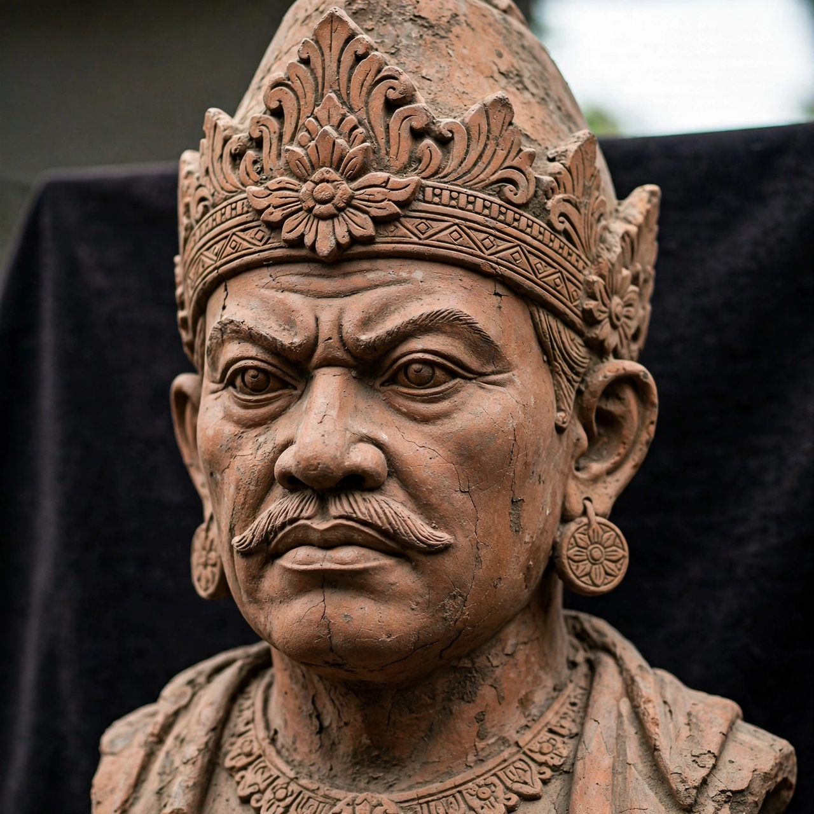

| Gajah Mada | |
|---|---|
| Born | c. 1290 |
| Died | c. 1364 |
| Office | Mahapatih (prime minister) of Majapahit |
| Monarchs | Tribhuwana Wijayatunggadewi; Hayam Wuruk |

Gajah Mada (c. 1290 – c. 1364) was a powerful military leader and mahapatih (prime minister) of the Javanese Hindu empire of Majapahit. He is credited with bringing the empire to its greatest extent, and in modern Indonesia he is regarded as a national hero and a symbol of national unity.
Little is known of Gajah Mada's origins; Javanese chronicles such as the Pararaton and the court poem Nagarakretagama describe his rise through the royal bodyguard, the Bhayangkara. He distinguished himself by suppressing the Ra Kuti rebellion in 1319, saving King Jayanegara, and by 1331 he had become mahapatih under Queen Tribhuwana Wijayatunggadewi.
At his inauguration, according to the Pararaton, Gajah Mada swore the Palapa oath (Sumpah Palapa): he would not taste palapa — often interpreted as spices, or as worldly pleasures — until he had united the entire archipelago, Nusantara, under Majapahit rule. The oath is quoted in forms such as: "If I have conquered Nusantara, I will break my fast. If I have conquered Gurun, Seram, Tanjung Pura, Haru, Pahang, Dompo, Bali, Sunda, Palembang and Tumasik, then I will break my fast."
Under Gajah Mada and King Hayam Wuruk (r. 1350–1389), Majapahit extended its influence over much of present-day Indonesia and the Malay Peninsula. His career ended in disgrace after the Bubat incident of 1357, when a Sundanese royal party arriving for a marriage alliance was massacred after a dispute over protocol; Gajah Mada was held responsible and fell from favour. He died around 1364 in unclear circumstances. Gadjah Mada University in Yogyakarta, founded in 1949, is named after him.
See also: Majapahit · Hayam Wuruk